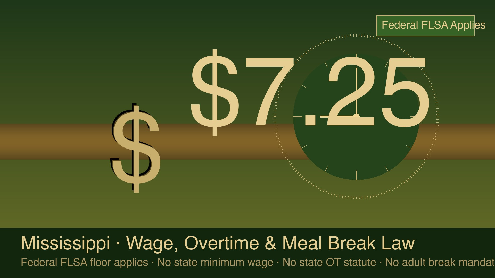

Does Mississippi have its own minimum wage, overtime, or meal break law?
No on all three. Federal FLSA is the floor. $7.25/hr federal minimum applies statewide. No state overtime statute. No adult break mandate. Mississippi ranks among the states with the fewest layers of wage protection — meaning federal rules govern, and competitive practice fills the gap.
· Mississippi guide



Programmatic hero · Mississippi wage, overtime and meal break law 2026
Mississippi has no state minimum wage, no state overtime statute, and no law requiring meal or rest breaks for adult employees. Federal FLSA governs all three. The federal minimum wage is $7.25 per hour. Overtime runs at 1.5× the regular rate for non-exempt employees working more than 40 hours per week. Mississippi law also prohibits cities and counties from enacting their own minimum wage rates. The only state wage rule outside federal FLSA is Mississippi Code § 71-1-35, which requires employers with 50 or more employees to pay at least twice per month. For remote and distributed teams, that narrow state floor means Teamed-administered payroll in Mississippi runs straightforwardly on federal rules, while competitive compensation practices — market-rate wages, scheduled breaks, overtime policies — sit above the statutory floor as employer policy rather than legal mandate.
What is the minimum wage in Mississippi in 2026?
Your account is run by named in-house specialists, not a ticket queue, a real human who knows your country, your team, and your contract.Mississippi has no state minimum wage. The federal FLSA rate of $7.25 per hour applies to all covered, non-exempt employees.
Mississippi is one of five US states that have chosen not to enact a state minimum wage, leaving the federal floor as the operative rate. The others are Alabama, Louisiana, South Carolina, and Tennessee. That is not a recent omission — Mississippi has never had a state minimum wage statute.
Mississippi Code Title 71 governs wage payment broadly, but wage rates for non-exempt private-sector employees remain the domain of federal law. The federal minimum has been $7.25 per hour since 24th July 2009, making it the longest the rate has gone unchanged in the history of the FLSA.
Mississippi also takes the additional step of expressly preempting local minimum wages. State law prohibits cities, counties, and other local authorities from setting a minimum wage above the federal floor. There is no jurisdiction in Mississippi where a higher minimum applies — not Jackson, Gulfport, Biloxi, or any other municipality.
Who does the $7.25 rate cover?
FLSA coverage runs on two tracks: enterprise coverage (for employers with annual gross revenues of $500,000 or more, or engaged in interstate commerce) and individual coverage (for employees whose own work is in interstate commerce). In practice, the large majority of Mississippi private-sector employers and employees fall under FLSA enterprise coverage.
The following categories may be subject to sub-minimum wage rules under federal law (not Mississippi law, which adds no separate provisions):
- Tipped employees. Employers may pay as little as $2.13 per hour to tipped employees, provided total hourly earnings (base wage plus tips) reach $7.25. If they do not, the employer must make up the difference in that workweek. Mississippi does not have a higher tipped minimum.
- Youth minimum wage. FLSA permits a $4.25 per hour rate for workers under 20 years old during their first 90 consecutive calendar days of employment with a new employer. Mississippi does not restrict or modify this federal provision.
- Student and apprentice rates. Federal Section 14(c) certificates permit sub-minimum wages for workers with disabilities in sheltered workshop programmes. Mississippi follows federal rules.
Mississippi restaurant and food service exemptions
Mississippi Code § 71-1-35 historically contained limited exemptions for certain food service establishments from state wage payment timing rules. Those provisions do not create a lower minimum wage rate — they relate to payment frequency obligations, not the rate itself. For covered FLSA employers, the $7.25 floor applies regardless.
Why the federal floor matters in practice
The absence of a state minimum wage, combined with local preemption, means Mississippi is a single-rate state: $7.25 applies uniformly from the Gulf Coast to Desoto County. Employers moving workers into Mississippi from higher-minimum states (Illinois: $15.00; Colorado: $14.81; Nevada: $12.00) need to adjust their expectations — the legal minimum drops, but the market for talent in specific roles may not. Competitive wages in Mississippi are set by industry and role, not statute.
What are Mississippi overtime rules in 2026?
Mississippi has no state overtime law. Federal FLSA governs: non-exempt employees receive 1.5× their regular rate for all hours worked beyond 40 per workweek.
Mississippi has never enacted a state overtime statute. The FLSA overtime threshold of 40 hours per workweek has applied since federal law was extended to cover most private-sector employees. There is no state requirement that overtime be paid on a daily basis (unlike California, which requires 1.5× after 8 hours in a day), no double-time requirement, and no state definition of a workweek different from the federal standard.
FLSA overtime: the core rules
| Rule | Federal FLSA (Mississippi) |
|---|---|
| Overtime trigger | More than 40 hours in a single workweek |
| Overtime rate | 1.5× the employee's regular rate of pay |
| Daily overtime | None — only weekly threshold applies |
| Double time | Not required under federal law or Mississippi law |
| Workweek definition | Any fixed, recurring 7-day period established by the employer |
| Regular rate of pay | All remuneration divided by all hours worked (includes most bonuses, shift differentials, non-discretionary pay) |
| Fluctuating workweek | Available under 29 CFR § 778.114 for salaried non-exempt employees with genuinely variable hours |
FLSA exemptions
Mississippi employers rely entirely on federal FLSA exemptions to classify employees as overtime-exempt. There are no Mississippi-specific exemptions that expand or narrow the federal list. The most commonly applied exemptions in Mississippi industries are:
- Executive exemption. Paid at least $684/week on a salary basis; primary duty is management; directs two or more full-time equivalent employees; has authority to hire/fire or meaningful input on those decisions.
- Administrative exemption. Paid at least $684/week; primary duty involves office or non-manual work directly related to management or general business operations; exercises discretion and independent judgement on significant matters.
- Professional exemption (learned). Paid at least $684/week; primary duty requires advanced knowledge in a field of science or learning customarily acquired by prolonged specialised instruction.
- Computer employee exemption. Paid at least $684/week on salary basis or $27.63/hr on hourly basis; primary duty involves systems analyst, programmer, or software engineer roles.
- Highly compensated employee (HCE). Annual compensation of $107,432 or more; performs at least one exempt duty; does not require that the employee meet the full duties test.
- Outside sales exemption. Primary duty is making sales or obtaining orders away from the employer's place of business. No minimum salary required.
The salary thresholds above reflect the 2024 DOL final rule levels ($684/week; $107,432 HCE). Note: litigation challenged the 2024 DOL rule's July 2024 and January 2025 increases. As of 30th May 2026, the $684/week threshold remains the operative standard following judicial rollback of the subsequent increases. Confirm the current threshold with legal counsel before relying on a specific figure.
Agriculture, retail, and hospitality carve-outs
Several sector-specific FLSA exemptions are particularly relevant to Mississippi's economy:
- Agriculture. Small agricultural operations employing fewer than 500 man-days of labour in any calendar quarter of the preceding year are exempt from FLSA overtime (and minimum wage) requirements. This carve-out is frequently relevant in Mississippi's farming sector.
- Motor carrier Act exemption. Employees of motor carriers subject to the Secretary of Transportation's authority over hours-of-service are exempt from FLSA overtime. This covers interstate truck drivers but not local delivery drivers who lack meaningful interstate commerce contact.
- Retail and service establishments. Section 7(i) of FLSA allows an alternative overtime arrangement for retail/service establishment employees if (a) their regular rate is at least 1.5× the minimum wage and (b) more than half their earnings come from commissions on goods/services. No additional state requirement exists in Mississippi.
No state daily OT — what this means for scheduling
In California, an employee working a 10-hour day earns overtime for hours 9 and 10 even if the total for the week is under 40. In Mississippi, an employee who works four 10-hour days and takes Friday off has worked 40 hours and owes no overtime — the Friday off resets the weekly total. Employers building compressed workweek schedules in Mississippi have wide latitude: 4×10s, 3×12s, or any other pattern totalling 40 hours or fewer per week requires no overtime premium under federal or state law.
Does Mississippi law require meal breaks or rest periods?
No. Mississippi has no statute requiring employers to provide meal breaks, rest periods, or any other scheduled breaks to adult employees. Federal FLSA compensability rules govern any breaks the employer chooses to give.
Twenty-one US states have no meal or rest break requirement for adult employees. Mississippi is among them. The Mississippi Code Title 71 does not contain any provision mandating break periods for private-sector adult workers. This is a deliberate legislative choice — proposals to introduce break requirements have not advanced in the Mississippi Legislature.
Federal FLSA rules on breaks actually given
The absence of a state mandate does not mean breaks are a free-form employer decision once taken. FLSA's compensability rules apply to all breaks an employer voluntarily provides:
| Break type | Duration | Compensable under FLSA? |
|---|---|---|
| Rest/coffee break | Under 20 minutes | Yes — must be paid, must count toward overtime calculation |
| Meal period | 30 minutes or more | Not required to be paid if employee is fully relieved of duties |
| Meal period (on-call) | Any duration | Compensable if employee cannot leave or must remain available |
| Brief personal breaks | Under 20 minutes | Compensable even if taken at employee's initiative |
The key practical rule: a 30-minute lunch break during which the employee is genuinely free to leave, eat what they want, and disengage from work is not compensable. A 30-minute "break" during which the employee must remain at their station or respond to customer questions is compensable and counts toward the 40-hour overtime trigger.
Minor employees — different rules apply
Mississippi Code Title 71, Chapter 1 governs child labour and largely mirrors federal standards. FLSA separately restricts working hours and break requirements for employees under 18 in certain circumstances. Employers hiring minors in Mississippi should confirm compliance with both the Mississippi child labour statute and applicable FLSA youth provisions for the industry and role.
What competitive practice looks like
The absence of a statutory break requirement does not mean Mississippi employers ignore breaks. Industry norms in warehousing, manufacturing, healthcare, and food service typically include scheduled rest and meal periods regardless of legal mandate. For remote workers, break practices are typically set by company policy. Teamed recommends all Mississippi employers document their break policy in writing, specify which breaks are paid and unpaid, and train supervisors on the FLSA compensability line — not because state law requires it, but because the DOL audit risk on misclassified meal periods is real even where state law is silent.
How often must Mississippi employers pay employees?
Mississippi Code § 71-1-35 requires employers with 50 or more employees to pay at least twice per month. Employers with fewer than 50 employees may set their own pay cycle. Federal FLSA's final-pay rule applies on separation: the next scheduled payday.
Mississippi's payment frequency statute is narrow compared to most states. The bi-monthly requirement for larger employers (50+) is the only state-level pay timing rule. This means:
- An employer with 60 employees in Mississippi must run payroll at least twice a month. Semi-monthly (1st and 15th, for example) or bi-weekly (every two weeks) schedules both satisfy this requirement.
- An employer with 30 employees has no state-mandated frequency. Monthly payroll is technically permissible under Mississippi law, though it may create FLSA issues if the pay period is structured in a way that delays overtime payments beyond what federal regulations allow.
- The pay period must be regular and predictable. Employers may not change pay schedules arbitrarily between payroll runs.
Final pay on termination or resignation
Mississippi has no state final-pay statute with a specific post-termination deadline. Federal FLSA governs: the final paycheck is due on the next regularly scheduled payday, whether the employee was terminated or resigned. This is notably more permissive than most US states, which require same-day or next-business-day payment on involuntary termination. There is no Mississippi equivalent of California's immediate-pay-on-firing rule.
Employers operating across multiple US states should not apply their Mississippi policy to other jurisdictions. A Mississippi policy of "next payday" on termination would violate the law in California, Colorado, Maryland, and several others.
Wage deductions
Mississippi follows federal FLSA restrictions on wage deductions. Deductions that would reduce pay below the federal minimum wage are impermissible for non-exempt employees. Mississippi has no state-level rules restricting deductions beyond the federal floor. Common permissible deductions (taxes, garnishments under court order, voluntary benefit contributions with written authorisation) apply in the same way as other FLSA-governed states.
How do Mississippi employers stay competitive without state mandates?
The federal floor in Mississippi is low by design. Employers hiring knowledge workers, engineers, or senior operators in competitive markets build wages, break policies, and overtime practices well above the statutory minimum as employer-set policy rather than legal obligation.
Mississippi consistently ranks at or near the bottom of state wage-protection indices. That reflects deliberate policy choices: no state minimum wage, no local wage laws, no break mandates, no state overtime statute. For employers, that legislative environment means the competitive bar is set entirely by the labour market for the role, not by statute.
In practice, this has two implications for distributed teams using Teamed for Mississippi-based employees:
- Compensation benchmarking matters more. When statute sets a low floor, the gap between "what the law requires" and "what talent expects" is wide. A software engineer hired in Jackson, Mississippi does not accept a $7.25/hr rate because it is legal. She accepts the same market rate as her counterparts in other non-California US states. Teamed's employer cost calculator gives you the loaded cost at any salary point.
- Written policy fills the gap. Mississippi employers who want clarity on break practices, overtime pre-approval, and pay periods need to document those policies explicitly. The state will not fill gaps left by employer silence. A detailed employee handbook provision on breaks and overtime is best practice even though no statute mandates it.
| State | Minimum wage | Daily OT | Meal break mandate (adults) | Local minimum wage |
|---|---|---|---|---|
| Mississippi | $7.25 (federal) | No | None | Preempted |
| Alabama | $7.25 (federal) | No | None | Preempted |
| Louisiana | $7.25 (federal) | No | None | No state law |
| Georgia | $5.15 (state) / $7.25 FLSA covered | No | None | No |
| Tennessee | $7.25 (federal) | No | 30 min for 6+ hrs (minors only) | Preempted |
| California | $16.50 | Yes (1.5× after 8 hrs/day) | 30 min after 5 hrs | Yes (many cities) |
| Colorado | $14.81 | Yes (1.5× after 12 hrs/day) | 30 min after 5 hrs | Yes (Denver: $18.81) |
| New York | $16.50 (NYC: $16.50) | No | None mandated by state OT statute | Yes |
For a company moving headcount from California to Mississippi: the statutory compliance footprint shrinks dramatically. No daily overtime calculation, no mandatory lunch break, no local minimum wage to track. That simplification is real. The salary expectation for a given role does not drop proportionally — remote labour markets are national for most knowledge work.
How Teamed handles Mississippi wage and overtime compliance
Everything runs on one platform: payroll, contracts, expenses, time-off, and compliance in a single workflow. Teamed acts as the legal employer for your Mississippi-based employees at a flat $599 per employee per month, Zero FX. FLSA tracking, overtime calculation, and pay period compliance run inside the Teamed platform.
Because Mississippi's wage statute stack is thin, the compliance work sits almost entirely at the federal FLSA layer. What Teamed administers for each Mississippi employee:
- Regular-rate calculation. All remuneration is included in the regular rate for overtime purposes: base wages, non-discretionary bonuses, shift differentials, and commissions. Discretionary bonuses and certain benefits are excluded per FLSA § 207(e). The platform computes this automatically at payroll run.
- 40-hour threshold tracking. Weekly hours roll up per workweek (your defined Sunday-to-Saturday or other fixed period). Overtime flags before payroll close, not after.
- Pay period compliance. For Mississippi employers above the 50-employee threshold, payroll runs at least semi-monthly. The platform enforces the minimum frequency by default.
- Tipped employee top-up. If a tipped employee's tips plus the $2.13 base fall short of $7.25/hr in any workweek, the system calculates the employer top-up required and applies it automatically.
- Exemption audit trail. Every exempt classification is documented at onboarding: exemption type, salary level, duties basis, and the date of last review. Mississippi has no state-specific exemption test, so the FLSA duties analysis is the sole framework.
- Break policy documentation. Teamed includes a Mississippi-specific break policy template in the employee handbook build, covering which breaks are paid (sub-20-minute rest periods) and which are unpaid (genuine 30+ minute meal periods), and the duty-of-care expectation during uninterrupted meal time.
Mississippi has no state wage-and-hour enforcement agency with independent audit authority. The DOL Wage and Hour Division is the operative regulator. Teamed's FLSA compliance posture is built to DOL audit standards, not the lighter state standard, because that is the live exposure for Mississippi employers.
When your Mississippi headcount grows large enough that running your own entity starts to make financial sense, the Crossover Calculator tells you the month the maths flips. That conversation is part of the Teamed relationship from day one, not a surprise when you hit a number.
Mississippi's wage stack is nearly all federal. No state minimum, no state overtime rule, no break mandate. That makes the compliance job simpler on paper, but it also means the employer owns every above-floor practice — break schedules, overtime pre-approval, competitive pay levels — as policy rather than statute. Document your practices clearly, because if a DOL investigator asks, there is no state wage law to backstop a vague verbal policy. Write it down. It protects the business and it protects the employee.
EOR is the right model in most countries, until it isn't. When you outgrow it, we help you graduate to your own entity without changing platforms. Mississippi offers employers a thin statutory floor and wide policy latitude.
Federal FLSA governs minimum wage, overtime, and break compensability.
The compliance is straightforward. The competitive practice still needs to be built.
, Tom Price-Daniel, Teamed